쓰는 양 줄이기 — 포니테일·케이브맨
영상은 오픈소스 도구 일곱 개를 골랐어요. 첫 화면에 도구 로고 일곱 개와 각 저장소의 깃허브 스타 수가 나란히 놓여 있어요. 가장 많은 건 포니테일(175,130), 가장 적은 건 토큰 옵티마이저예요. 다 합치면 51만 7천 개가 넘어요.
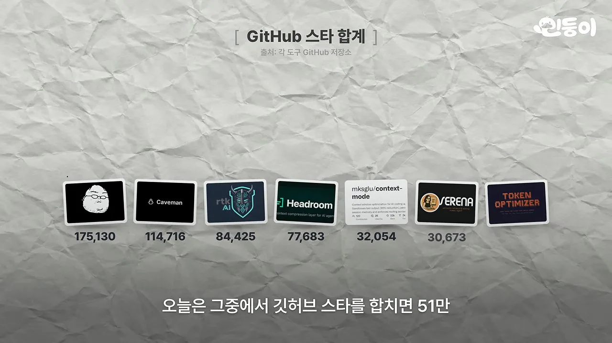
영상 전체의 뼈대는 토큰이 새는 네 곳이에요. 화면에 01 쓰는 양, 02 읽는 양, 03 찾아 헤맴, 04 내 설정이 차례로 깔리고, 그 아래에 해당 도구 이름이 붙어요. 이 문서도 이 순서를 따라가요.
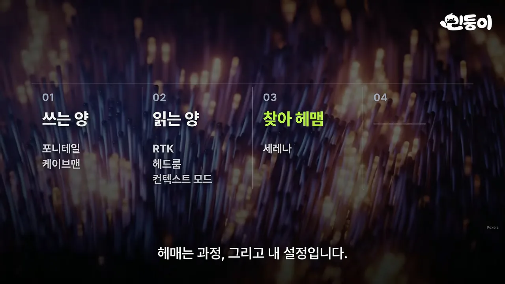
포니테일: 새 코드를 쓰기 전에 있는 것부터
AI에게 기능 하나를 부탁하면 비슷한 기능이 이미 있는데도 새로 만들 때가 있어요. 포니테일은 이걸 막는 스킬이에요. 그림의 네 칸이 확인 순서예요. ① 프로젝트 코드, ② 기본 기능, ③ 설치한 라이브러리를 차례로 보고, 앞의 세 칸에 빨간 X가 붙었을 때만 ④ 새 코드로 넘어가요.
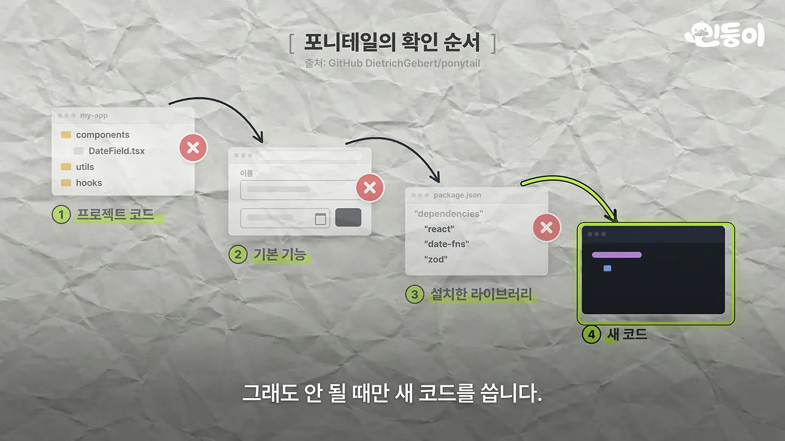
예시는 날짜 선택창이에요. 브라우저에는 날짜를 고르는 기능이 원래 들어 있어서 <input type="date"> 한 줄이면 달력 모양과 고르는 동작이 다 생겨요. 화면 오른쪽 손글씨가 '이 한 줄이면 끝'이라고 짚어요.
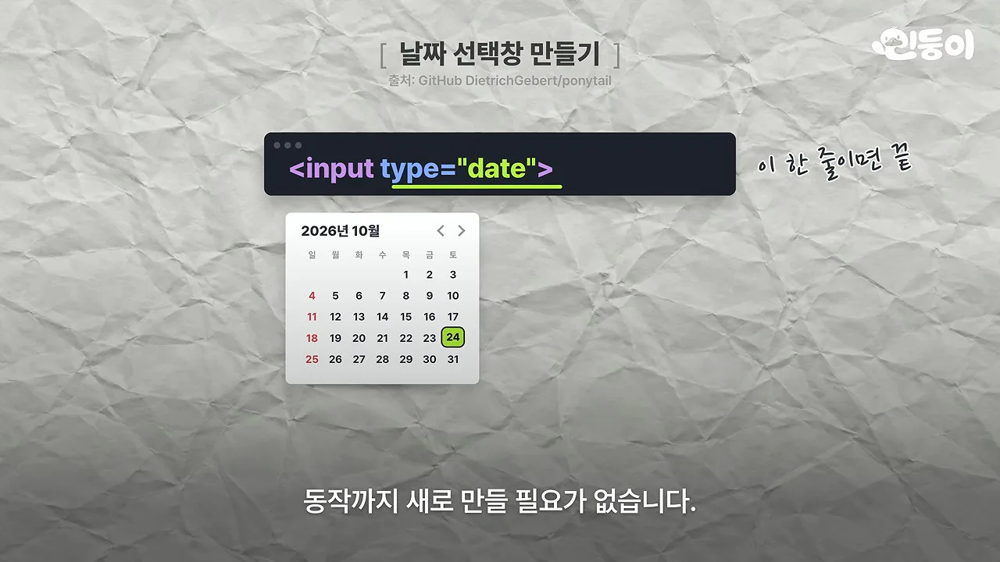
제작자 예시에서는 처음부터 만든 335줄이 10줄로 줄었어요. 막대그래프의 가로축을 보면 '쓸 때'만 있는 게 아니에요. '다시 읽을 때'와 '고칠 때'가 이어져요. 새로 쓰는 코드가 줄면 나중에 AI가 그 코드를 다시 읽고 고칠 때 드는 토큰도 같이 줄어든다는 뜻이에요.
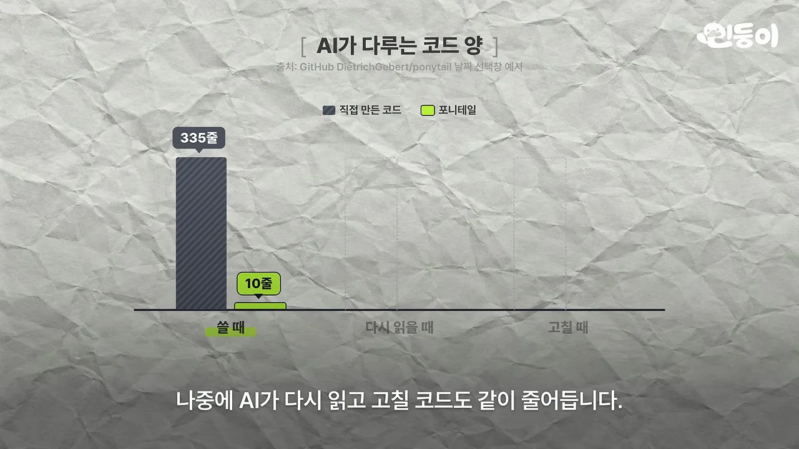
이미 짠 코드를 점검하는 명령도 있어요. /ponytail-review는 방금 고친 코드를, /ponytail-audit은 프로젝트 전체를 봐요. 화면은 audit 결과예요. 찾은 문제를 MUST FIX, SHOULD FIX, NICE TO HAVE로 줄 세우고 맨 아래 Verdict 줄에서 '1번부터 고치라'고 결론을 내요.
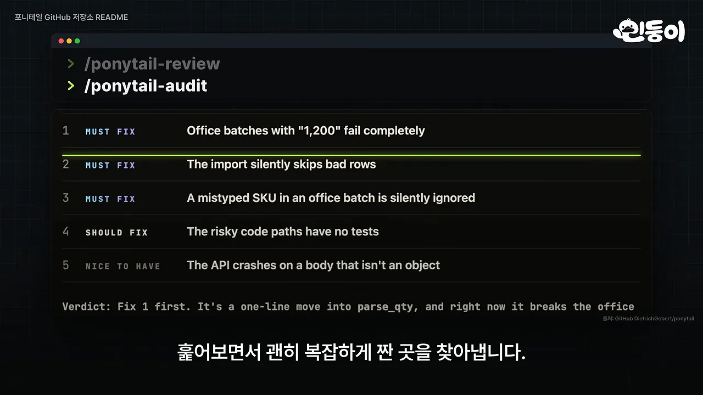
제작자가 Claude Code에서 같은 작업 39개를 포니테일 없이, 있게 돌려 비교한 숫자가 저장소 첫머리에 있어요. 코드 -53%, 시간 -41%, 비용 -26%, 토큰 -45%예요.
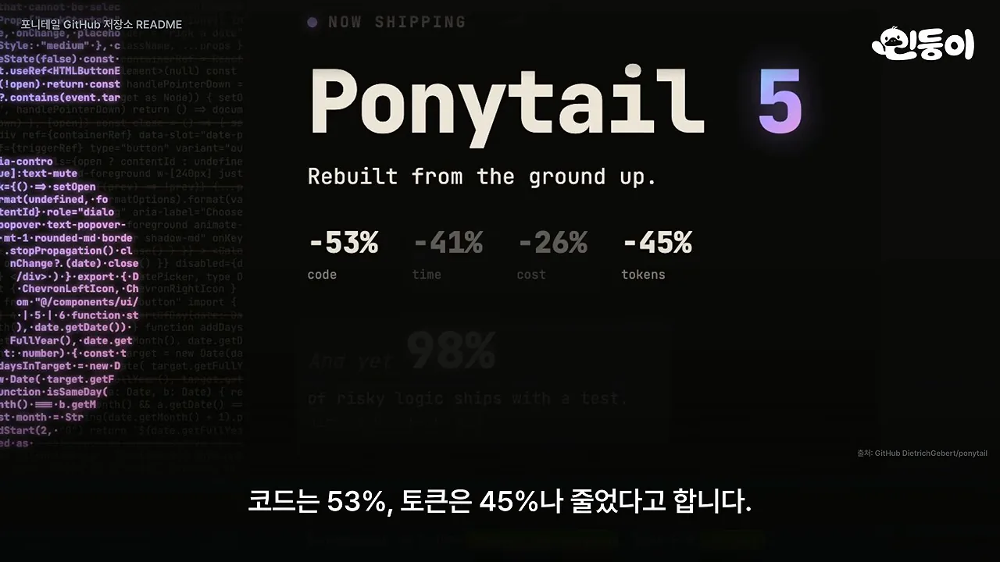
케이브맨: 답변에서 군더더기 빼기
케이브맨은 AI가 원시인처럼 짧게 말하게 하는 스킬이에요. 인사, 맞장구, 했던 설명 반복을 빼고 답부터 말해요. 코드와 명령어는 글자 그대로 남겨요. 화면에서 오류를 물었을 때 보통 답은 '좋은 질문입니다. 이 문제를 이해하려면 먼저…'로 시작하는데, 케이브맨을 켜면 '작업이 두 번 실행됨. 중복 호출 제거'처럼 바로 원인과 해결로 가요.
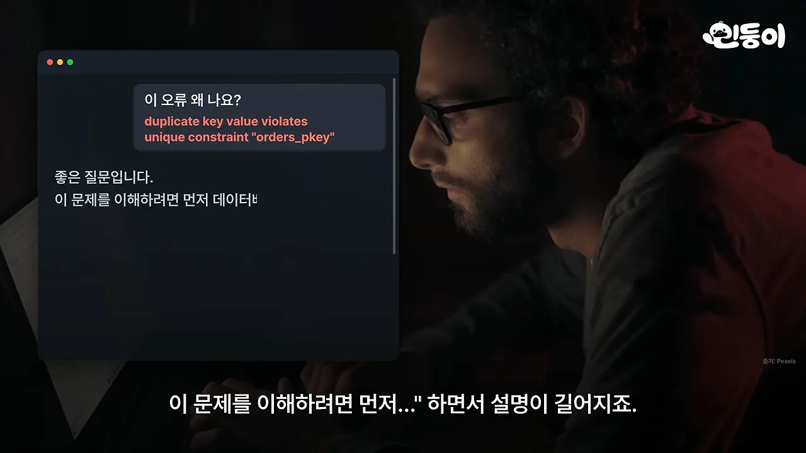
공식 저장소의 영어 예시가 더 분명해요. 왼쪽 Normal agent는 React 컴포넌트가 다시 그려지는 이유를 63토큰으로 길게 풀고, 오른쪽 Caveman agent는 같은 해결책(useMemo로 감싸기)을 20토큰으로 말해요. 아래 'Same fix. 63 token become 20.'이 요점이에요.
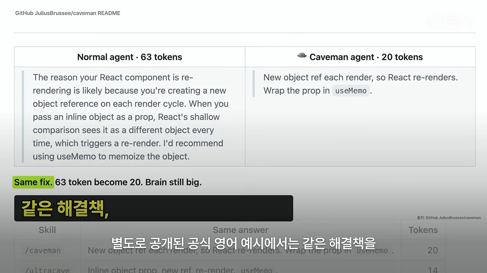
모드도 고를 수 있어요. 기본은 /caveman이고, 더 짧게 받으려면 /ultracave를 써요. 표의 Tokens 열을 보면 20, 14, 13으로 내려가요. 맨 아래 /megacave는 한문 투로 답하는 모드예요.
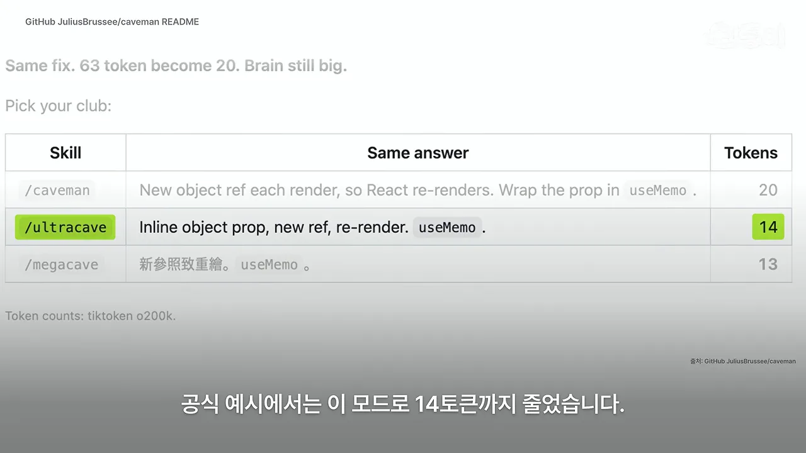
요즘은 답변뿐 아니라 AI가 읽는 파일을 줄이는 기능도 들어 있어요. 화면의 caveman compress는 orders.json을 16,098토큰에서 1,091토큰으로 줄이고, 원본을 다시 받을 수 있는 recovery handle을 남겨요. 답변만 짧게 받고 싶으면 스킬만 따로 설치해도 돼요.
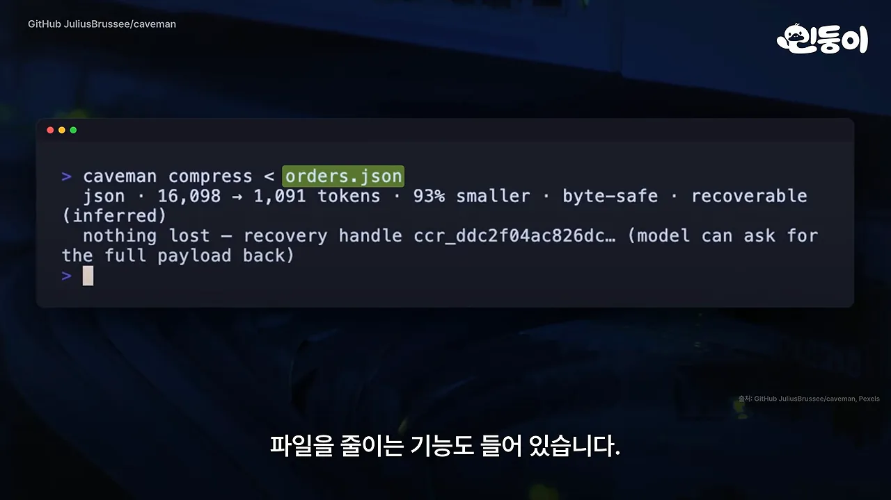
영상은 쓰임새도 짚어요. 처음 배우는 내용이라면 긴 설명이 오히려 도움이 돼요. 이미 아는 작업에서 결과만 빨리 보고 싶을 때 케이브맨이 잘 맞아요.
터미널 출력 걸러 내기 — RTK
여기까지는 AI가 내놓는 쪽이었어요. 이번엔 AI가 읽는 쪽이에요. AI는 답을 쓰기 전에 파일을 열고 명령을 실행한 결과를 읽는데, 이 결과를 반복해서 읽는 데도 토큰이 많이 들어요. RTK는 터미널의 긴 실행 결과를 정리해서 AI에게 넘겨 주는 프로그램이에요.
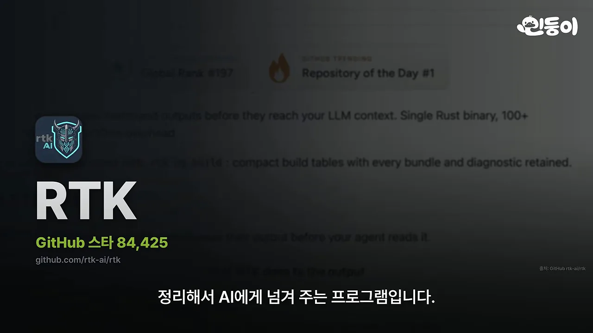
테스트를 돌리면 통과(PASS)와 실패(FAIL) 줄이 쭉 나와요. 정작 고칠 건 실패한 몇 개뿐인데 AI는 통과 줄까지 다 읽어요. RTK를 붙이면 화면처럼 바뀌어요. 100개 중 98개 통과는 '98 passed' 한 줄이 되고, 실패한 cart.test.ts와 login.test.ts 두 개만 기대값과 실제값까지 자세히 남아요.
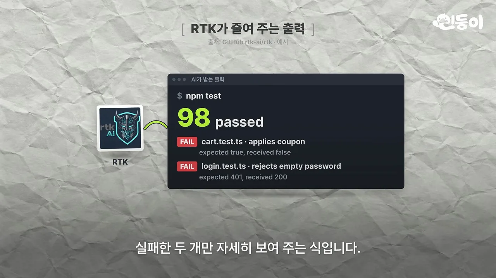
테스트만 그런 게 아니에요. 파일 검색 결과는 파일별로 묶고, git log는 커밋 번호, 작성자, 제목만 남겨요. 오른쪽 창이 정리된 git log예요. 날짜 줄은 남아 있지만 긴 본문은 빠졌어요. 이렇게 다룰 수 있는 명령이 100개가 넘는다고 해요.
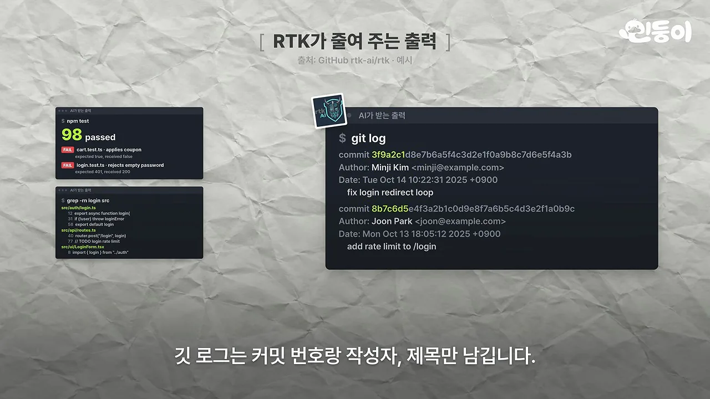
명령어를 일일이 바꿔 칠 필요는 없어요. 그림 왼쪽 AI 창에서 npm test, git log, grep -rn login src를 그대로 실행하면, 가운데 RTK를 거쳐 터미널로 가고 정리된 결과('98 passed · FAIL 2')가 돌아와요.
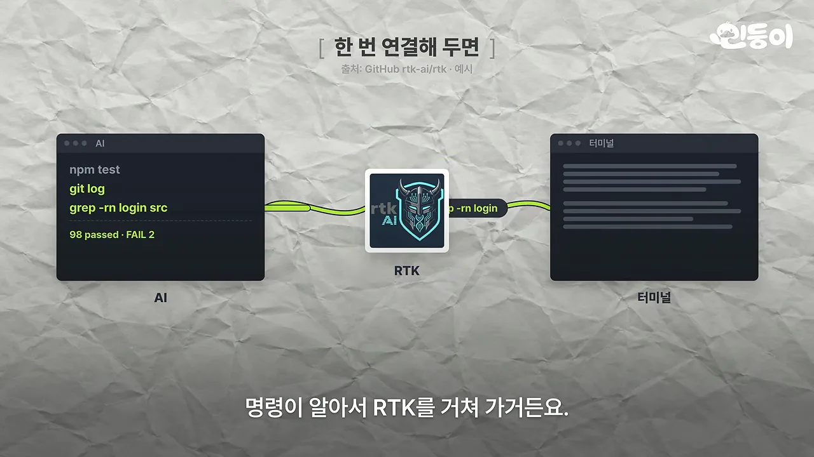
공식 설명으로는 이런 명령의 출력이 최대 90%까지 줄어요. 화면은 저장소 README의 그 문장이에요. 테스트나 빌드를 자주 돌린다면 영상은 RTK를 가장 먼저 붙여 볼 도구로 꼽아요.
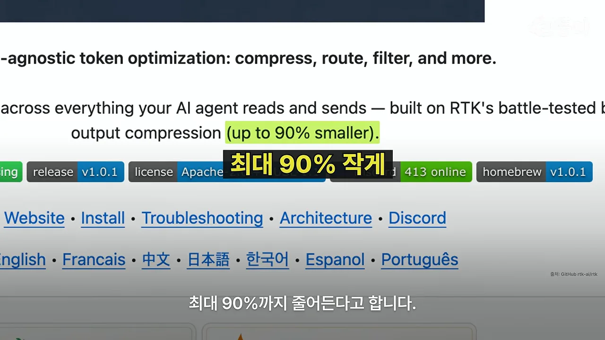
읽는 자료 줄이기 — 헤드룸·컨텍스트 모드
헤드룸: 보내기 전에 내 컴퓨터에서 줄이기
RTK가 터미널 결과에 집중한다면 헤드룸은 범위가 훨씬 넓어요. 화면 아래 초록 괄호가 터미널 결과, 파일, 로그, 검색 문서 네 가지를 모두 감싸요. AI가 읽는 자료 대부분이 대상이라는 뜻이에요. 헤드룸은 이 자료를 내 컴퓨터에서 먼저 줄인 다음 AI에게 보내요.
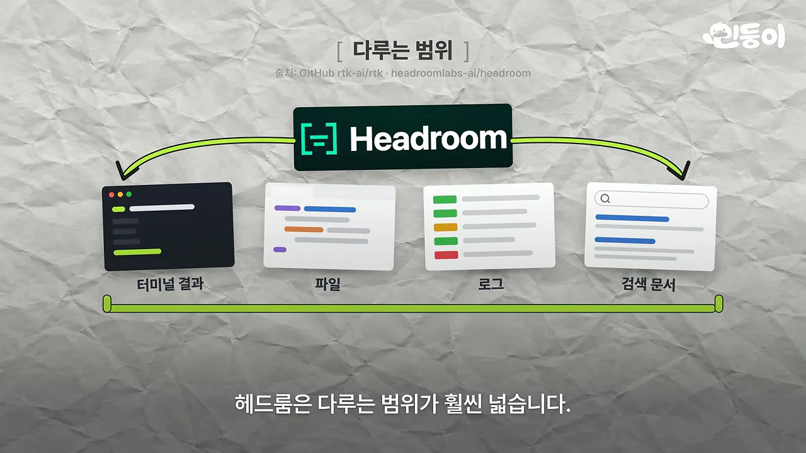
헤드룸은 자료가 표 같은 데이터인지, 코드인지, 일반 글인지부터 구분하고 종류마다 맞는 방식으로 줄여요. 제작자가 공개한 로그 예시가 그 결과예요. 원본 10,144토큰이 1,260토큰으로 줄었는데, 오른쪽 창의 빨간 FATAL 한 줄, 곧 꼭 찾아야 했던 치명적 오류는 그대로 남아 있어요.
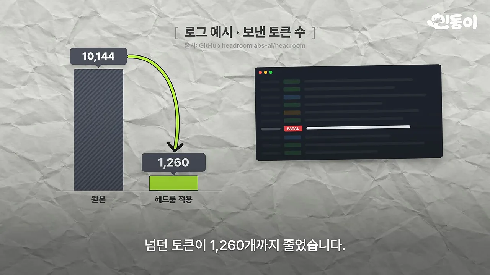
줄이다 보면 원문이 다시 필요할 때도 있어요. 헤드룸은 원본을 내 컴퓨터에 보관해 두고, AI가 더 봐야 할 때 그때 꺼내 가게 해요. 요약본부터 보고 필요할 때만 원문을 펼치는 셈이에요. 연결은 README의 'Agent wrap' 한 줄이에요. Claude Code에서는 headroom wrap claude로 연결되고, 같은 자리에 codex, grok을 넣으면 다른 도구에도 붙어요.
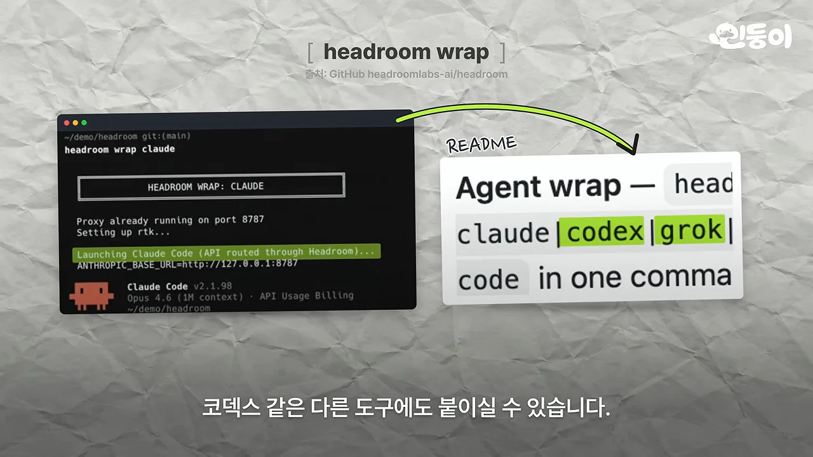
실패한 작업 기록을 분석해 다음 작업 때 조심할 점을 남기는 기능도 있어요. 화면은 그 결과물이에요. CLAUDE.md에 'Headroom Learned Patterns'라는 제목으로 '맨 python, pip, ruff 대신 .venv 안의 것을 쓰라' 같은 규칙을 적어 줘요.
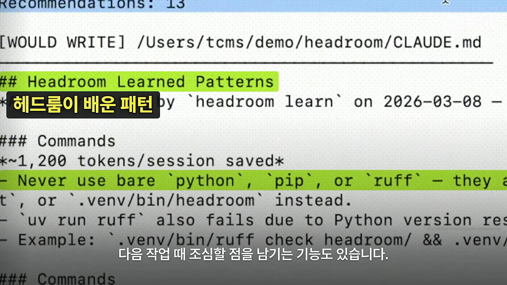
컨텍스트 모드: 원문 대신 처리 결과만
헤드룸이 자료를 줄여서 보낸다면, 컨텍스트 모드는 원문을 아예 보내지 않고 AI 대화 밖에서 처리한 결과만 보내요. 예를 들어 '이 파일들에서 TODO가 몇 번 나오는지 세어 줘'라고 하면 보통은 AI가 파일을 하나씩 열어 다 읽고 세요. 컨텍스트 모드는 왼쪽 샌드박스에서 개수를 세는 짧은 프로그램을 돌리고, 오른쪽 대화에는 'TODO 합계'라는 답만 넘겨요.
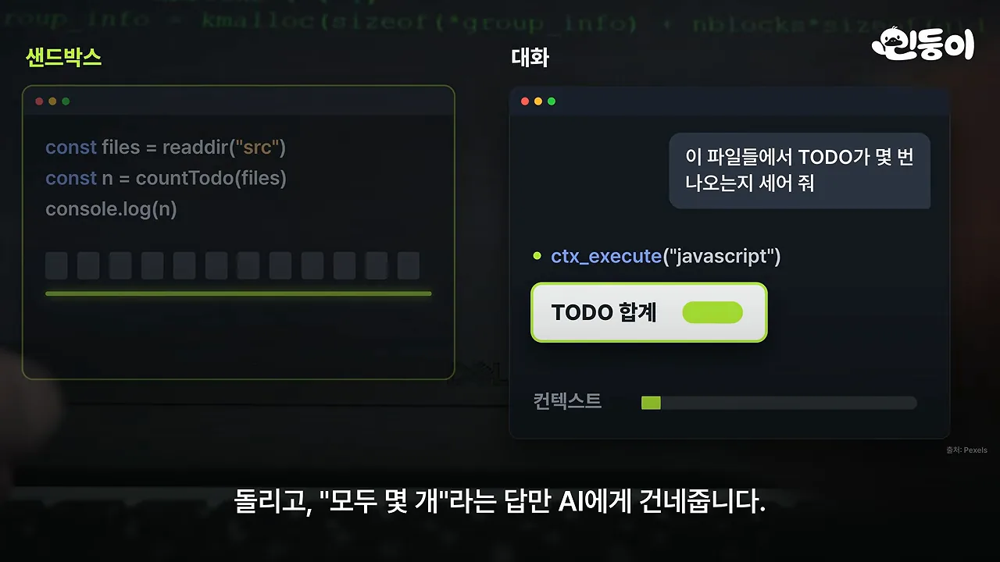
공개된 예시는 README의 코드 주석이에요. 'Before: 47 × Read() = 700 KB. After: 1 × ctx_execute() = 3.6 KB.' 파일 47개를 하나씩 읽을 때 쌓이던 700KB가 프로그램 한 번 실행으로 3.6KB가 됐어요.
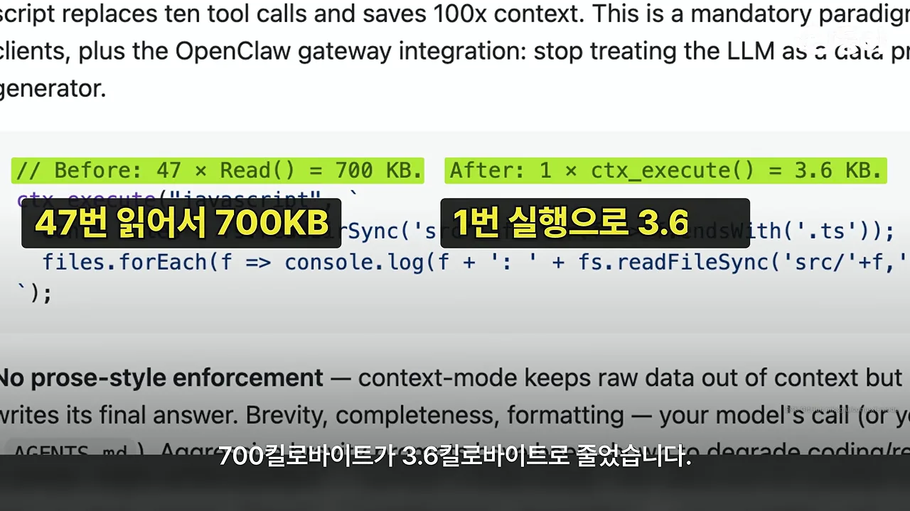
긴 문서도 대화에 통째로 넣지 않고 따로 저장해 두었다가, 필요할 때 그 안에서 필요한 부분만 찾아 꺼내요. 대화가 길어져도 하던 일을 놓치지 않게 돕기도 해요. 화면의 작업 기록 메모에는 고친 파일(src/auth.ts), 난 오류(TypeError: undefined), 사용자가 정한 것('API 이름은 그대로')이 적혀 있어요. 대화가 압축된 뒤에는 이 중 필요한 기록만 골라 다시 넣어요.
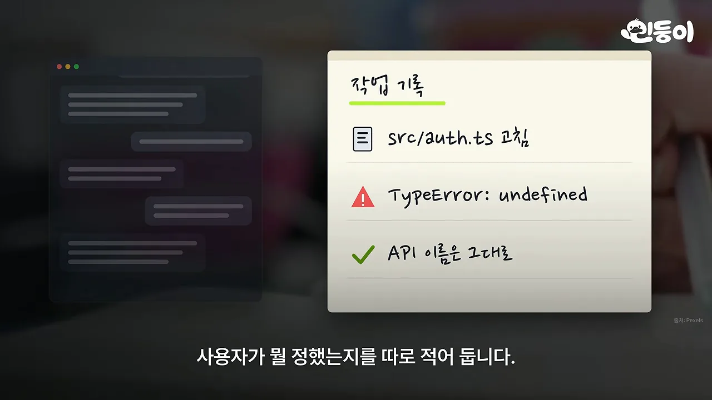
Claude Code에는 플러그인으로 설치하고, 얼마나 아꼈는지도 명령 하나로 확인할 수 있어요. 파일이나 문서를 많이 분석하다가 컨텍스트가 금방 차는 사람에게 맞아요.
코드 찾아 헤매기 줄이기 — 세레나
여기까지는 AI에게 들어가는 자료의 양을 줄였어요. 그런데 고칠 곳을 찾느라 AI가 엉뚱한 파일을 열었다 닫았다 하면 그것도 다 토큰이에요. 세레나는 AI가 고칠 함수로 바로 찾아가게 해 주는 도구예요.
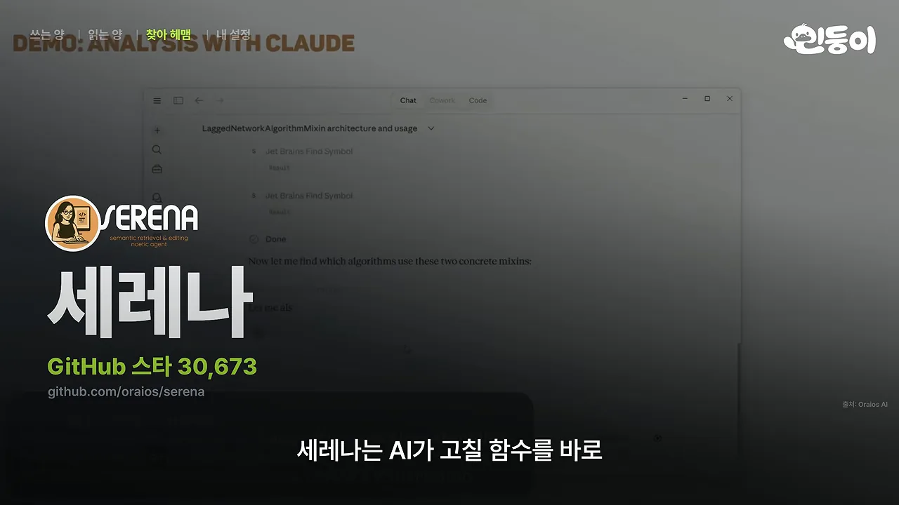
로그인 기능을 고친다고 해 봐요. '로그인'이라는 글자로 검색하면 화면처럼 docs/README.md, CHANGELOG.md, i18n/ko.json, styles/login.css까지 줄줄이 걸려요. 오른쪽에 겹쳐 쌓인 창들처럼 AI는 이걸 하나씩 다 열어 봐요.
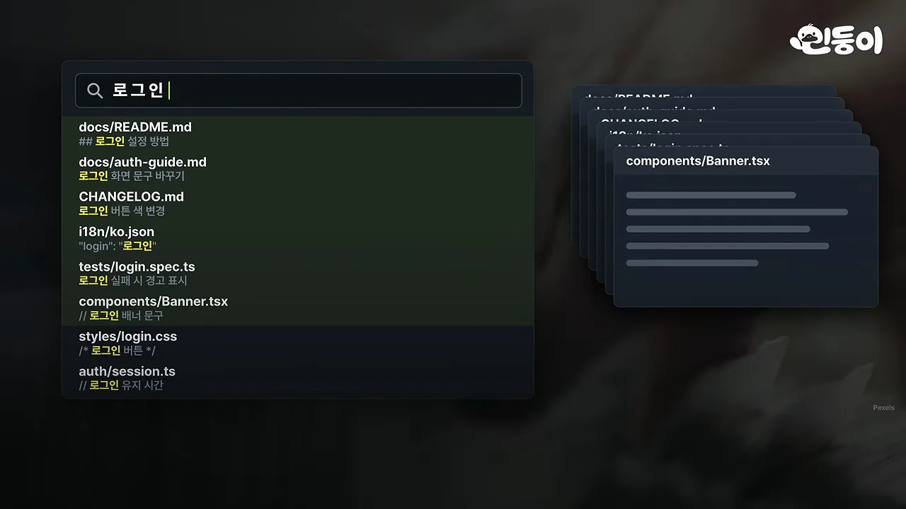
세레나를 붙이면 그림처럼 바뀌어요. 가운데 auth/login.ts의 function login()이 진짜 함수이고, 초록 선으로 이어진 LoginPage.tsx, SignupForm.tsx, hooks/useAuth.ts, api/session.ts가 이 함수를 부르는 코드예요. README.md, CHANGELOG.md, styles.css 같은 회색 카드는 처음부터 건너뛰어요.
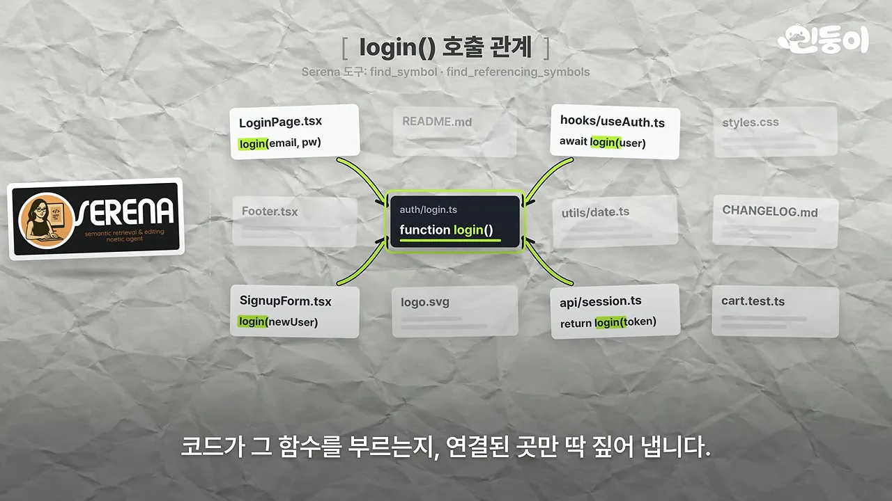
함수 이름을 바꾸거나 함수 하나를 통째로 고칠 때도 이 연결 정보를 써요. 데모 화면 왼쪽 아래 '세레나 도구 호출' 상자에 실제로 쓴 도구 세 개가 찍혀 있어요. rename_symbol로 이름을 바꾸고, replace_symbol_body로 함수 본문을 갈아 끼우고, find_referencing_symbols로 부르는 곳을 찾아요.
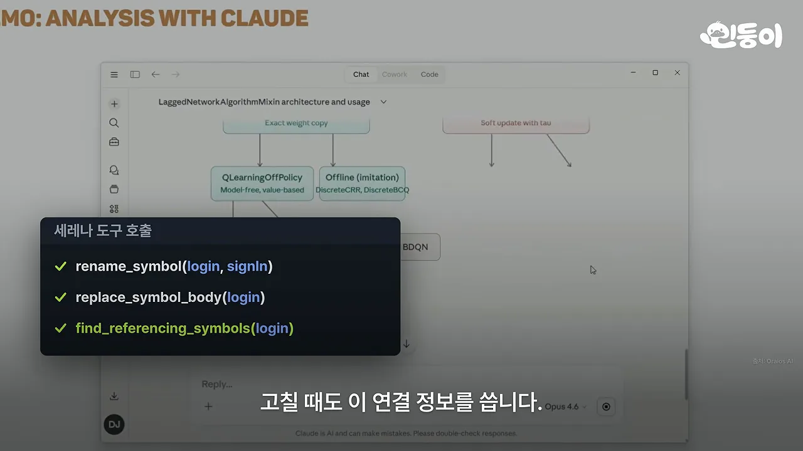
연결은 MCP(Model Context Protocol)로 해요. AI가 바깥 프로그램을 자기 도구처럼 쓰게 해 주는 연결 방법이에요. 구조도를 왼쪽부터 보면 사람이 AI 클라이언트에 요청하고, AI 클라이언트가 세레나의 MCP 서버에 도구를 호출(tool call)하면, 세레나가 오른쪽 Language Intelligence(언어 서버나 JetBrains 플러그인)로 코드를 분석해 결과를 돌려줘요.
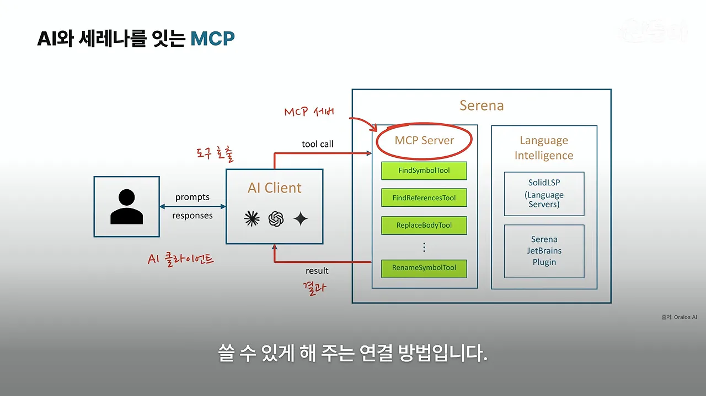
그래서 파일 몇 개짜리 작은 프로젝트보다, 기능이 여러 파일에 나뉜 큰 프로젝트에서 효과가 커요. 화면 오른쪽 shop-platform은 auth.ts, session.ts, useAuth.ts, Login.tsx가 멀리 떨어져 있어도 선으로 이어져 있어요. 그 아래 손글씨 '여기서 진가'가 이쪽을 가리키고, 왼쪽의 작은 todo-app은 흐리게 빠져 있어요.
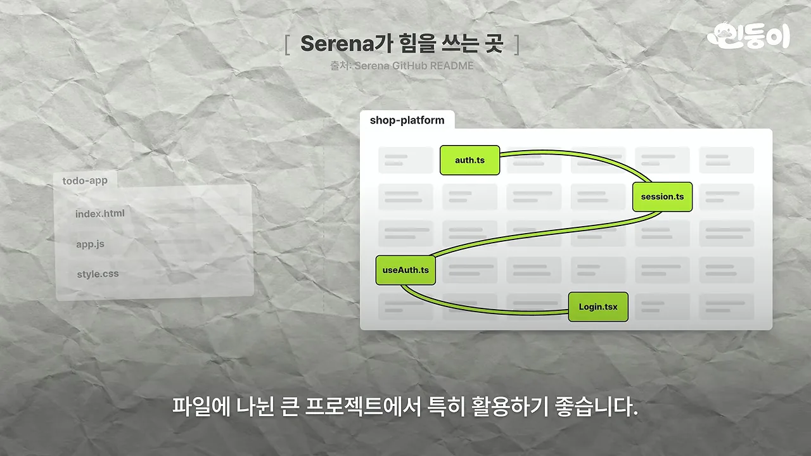
내 설정 점검하기 — 토큰 옵티마이저와 고르는 법
마지막은 내 설정이에요. 토큰 옵티마이저는 AI에게 함께 전달되는 설정을 점검해서 토큰이 어디서 새는지 보여 주는 도구예요.
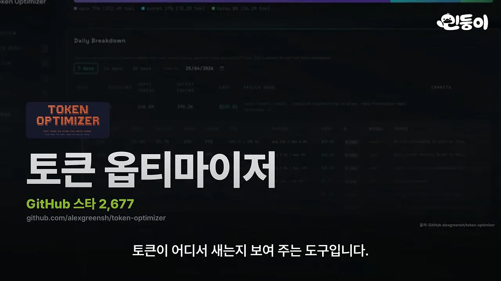
내가 친 요청 말고도 설정에 따라 AI에게 같이 실려 가는 정보가 있어요. 화면 왼쪽을 보면 '로그인 버튼 색만 바꿔 줘'라는 한 줄 아래에 CLAUDE.md(프로젝트 규칙을 적은 지침 파일), SKILL.md(설치한 스킬 설명), MCP 도구 설명, MEMORY.md(예전에 저장한 작업 메모)가 붙어서 오른쪽 Claude Code로 함께 들어가요. 빨갛게 표시된 SKILL.md와 MCP 도구처럼 길어지거나 겹치는 항목은 지금 작업과 상관없어도 매번 읽혀요.
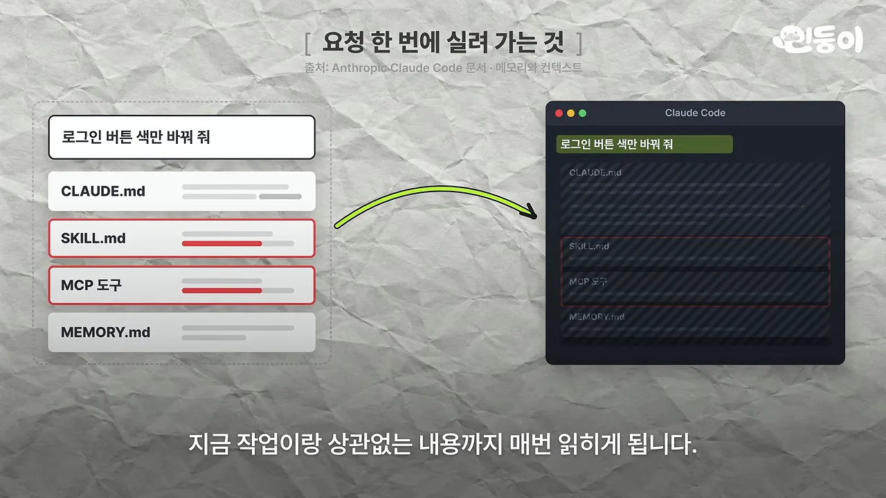
토큰 옵티마이저는 이걸 검사해서 무엇을 정리하면 되는지 알려 주고, 어디에 토큰이 많이 드는지 대시보드로 보여 줘요. 대시보드 맨 위 Total Session Overhead가 30.9K예요. 아직 아무것도 입력하기 전에 설정만으로 쓰는 양이라는 뜻이에요.

점검만 하는 건 아니에요. 이미 읽은 파일을 다시 열 때는 바뀐 부분만 보여 줘요. 화면의 billing/invoice.ts에 '이미 읽은 파일' 표시가 붙고, 빨간 줄(지운 것)과 초록 줄(더한 것)만 다시 전달돼요. 긴 실행 결과는 따로 보관했다가 필요할 때 꺼내요.
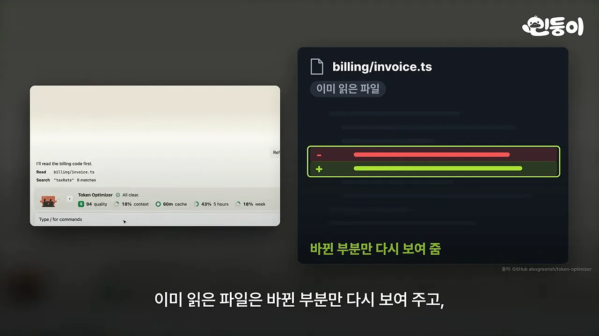
대화 기록 막대가 빨갛게 차서 '곧 자동 압축'이 뜨면, 압축되기 직전에 작업 상태를 적어 둬요. 그래서 압축된 뒤에도 하던 작업을 이어서 할 수 있어요. 설치는 Claude Code에 플러그인으로 하고, /token-optimizer를 입력하면 점검이 시작돼요.
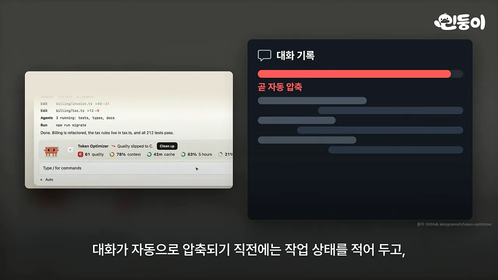
증상으로 고르기
영상의 마무리는 처음의 네 칸으로 돌아와요. 쓰는 양, 읽는 양, 찾아 헤맴, 내 설정 아래에 도구가 하나씩 채워진 그림이에요. 영상이 말한 증상과 도구를 표로 옮기면 이래요.
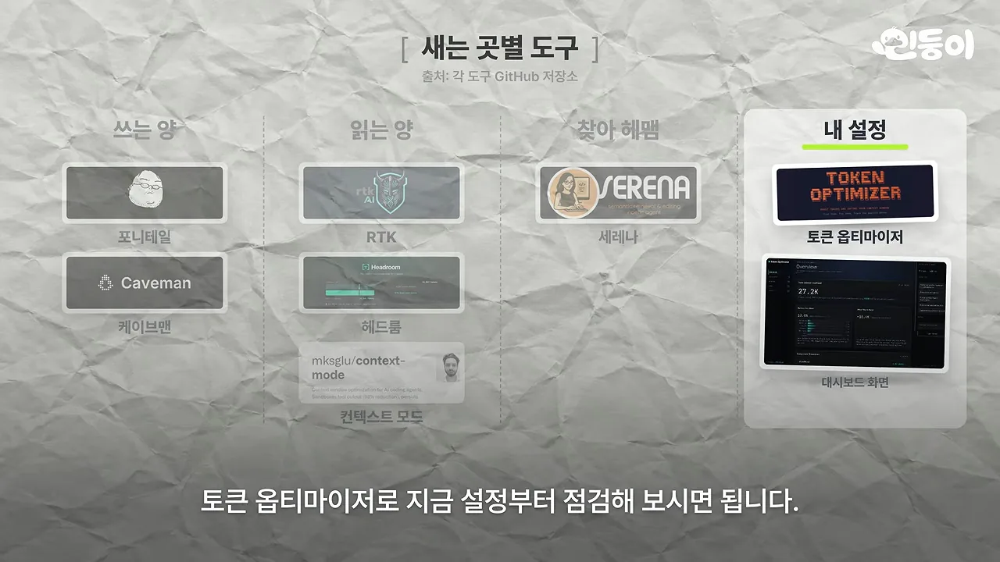
| 이럴 때 | 새는 곳 | 도구 | 연결 방식 (영상 기준) |
|---|---|---|---|
| 작은 기능에도 코드와 파일이 자꾸 늘어요 | 쓰는 양 | 포니테일 | 스킬 |
| 답변이 너무 길어요 | 쓰는 양 | 케이브맨 | 스킬 (/caveman) |
| 테스트·빌드 같은 터미널 결과가 길어요 | 읽는 양 | RTK | 명령이 자동으로 거쳐 가는 프로그램 |
| 로그·문서·외부 자료를 많이 읽혀요 | 읽는 양 | 헤드룸 | headroom wrap claude |
| 파일·문서 분석으로 컨텍스트가 금방 차요 | 읽는 양 | 컨텍스트 모드 | Claude Code 플러그인 |
| 큰 프로젝트에서 코드 찾느라 헤매요 | 찾아 헤맴 | 세레나 | MCP |
| 어디서 새는지 모르겠어요 | 내 설정 | 토큰 옵티마이저 | Claude Code 플러그인 |
영상에 나온 '줄어든 숫자'를 한 그림에 모으면 아래와 같아요. 단위가 줄, 토큰, KB로 서로 달라서, 원래 양을 100으로 놓고 줄인 뒤 남은 비율로 바꿔 그렸어요.